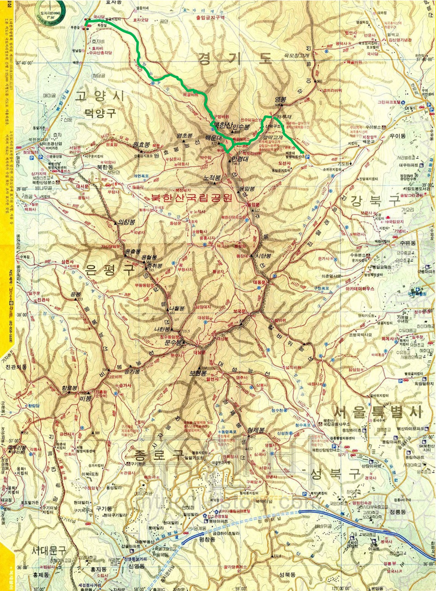

북한산(835.6m)

| 2020년 10월 03일 |
밤골계곡, 숨은벽능선, 해골바위, 구멍바위, 위문, 백운대, 위문, 백운산장, 하루재, 우이동 |
북한산
한성 또는 한강의 북쪽에 있는 산이란 뜻이다.삼각산: 백운대, 인수봉, 만경대 3 개의 봉우리가 모여 있는 모습을 가리키는 말
인수봉: 거대한 송곳처럼 뽀족하게 솟은 모습이 보는 사람을 압도한다. 특이한 모습으로 가장 기억에 남는 봉우리이다.
참고 링크
- 서울 근교의 산
- 다른 사람 참고 산행기: 북한산 주요 봉우리의 비경
준비물
지도, 쌍안경, 아빠점심, 과일(사과/복숭아), 깔개, 보조배터리, 카메라, 생수 (더 많이 가져가자), 이온음료, 장원김밥교통편
고양시 덕양구 밤골: 지하철 3호선 구파발역 2번출구 나와서 뒤돌아감,버스 34, 704번, 효자2통 하차
총 소요시간: 1시간 20분 (도보 포함)
도선사: 우이신설선 타고 온다. 버스도 함 보자~
느낀 점, 배운 것
- 기암절벽. 주의 필요
- 삼각산
- 인수봉
- ...